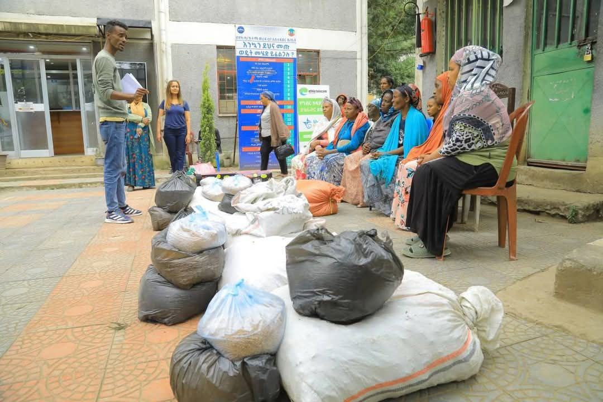
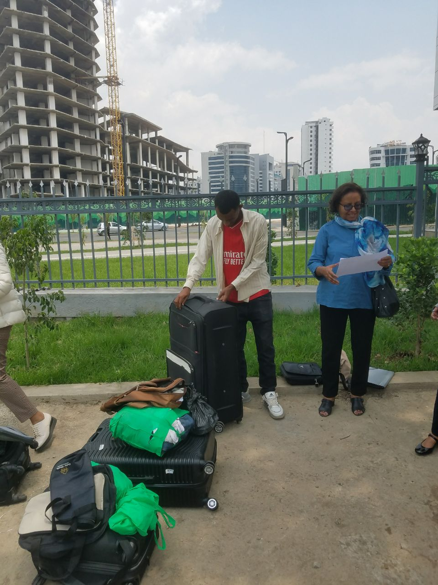
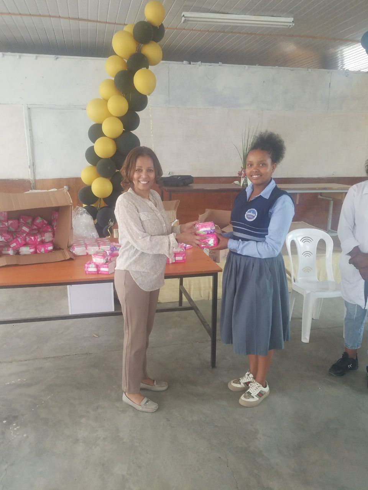
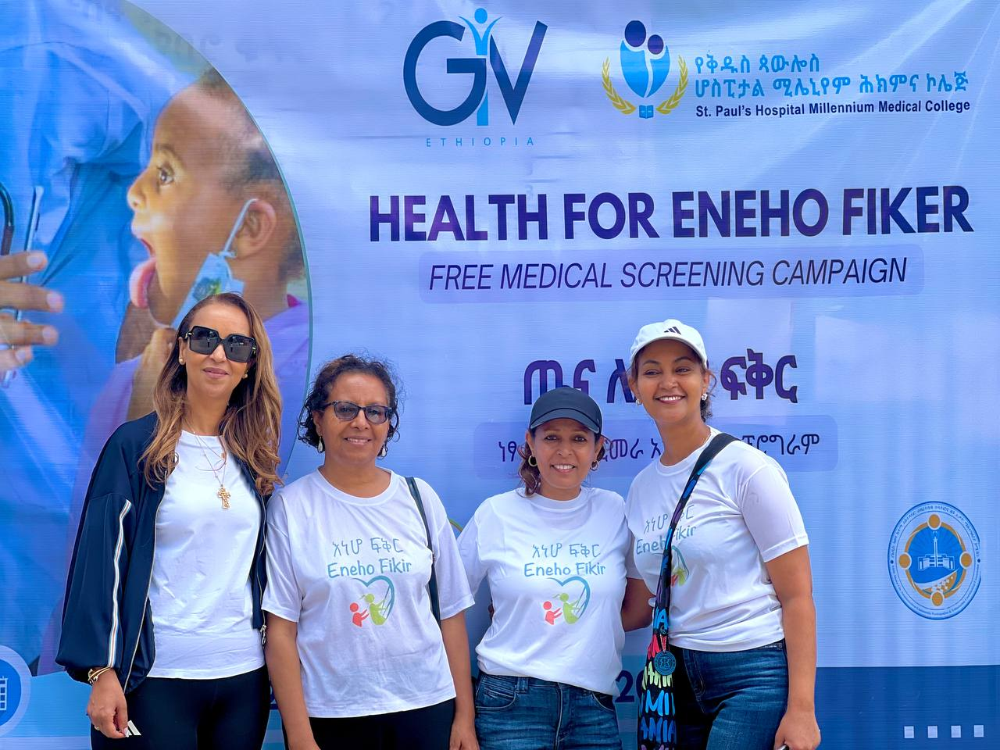

Ongoing Projects
Explore our initiatives aimed at empowering vulnerable communities, supporting education, strengthening livelihoods, and improving everyday wellbeing.

School Feeding
Providing breakfast and lunch to vulnerable students, improving health, focus, and academic performance.
Read More
Income Generation Activities
Empowering vulnerable mothers with startup capital, skills training, and self-help groups for sustainability.
Read More
Socio-economic Support
Supporting outstanding vulnerable students with financial aid and mental wellness programs.
Read More
Sanitary Pad Support
Reducing absenteeism among female students by providing sanitary pads for better school participation.
Read More
Humanitarian Support
Providing food, clothing, and essentials during crises for vulnerable families in Yeka Sub City.
Read More
Empowering Disadvantaged High School Students in Addis Ababa Project with CPAR
Empowering disadvantaged high school students with career development and emotional support.
Read More
Medical Campaigns
Providing free medical services, including dental, eye, and cancer screenings, in partnership with health institutions.
Read More